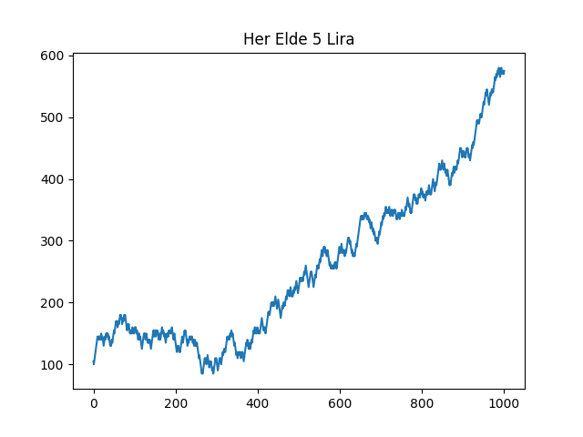
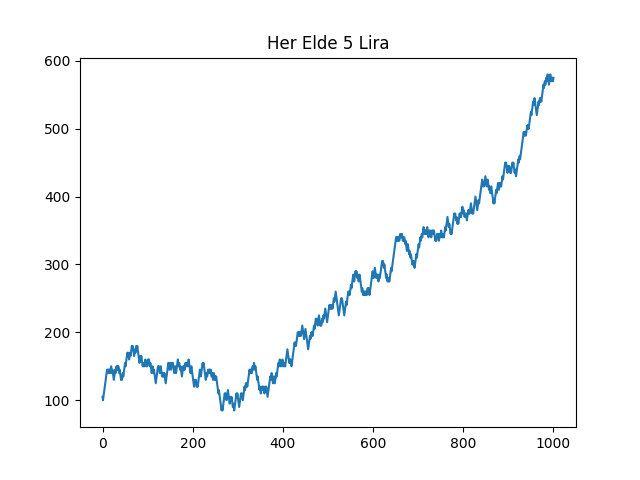
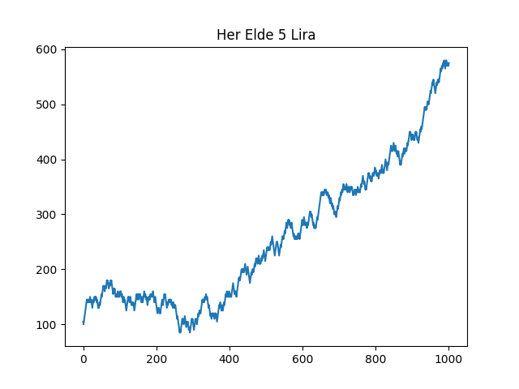

Diyelim ki iki borsacı 100 lira sermaye ile başlıyor, ve şu oyunu oynuyorlar: her elde yazı/tura atıyorlar ve tahmınları tutarsa 1 lira kazanıyorlar, tutmazsa 1 lira kaybediyorlar (daha doğrusu koydukları para kadar kazanıyorlar, yoksa koydukları parayı kaybediyorlar) [1, sf. 131].
Peki her elde ne kadar para koyacaklarını nasıl idare edecekler? Mesela ilk borsacı her elde sermayesinin yüzde 5'ini koysun,
import pandas as pd
np.random.seed(1)
data = np.random.binomial(n=1,p=550./1000,size=1001)
df = pd.DataFrame(data,columns=['dice'])
# 0/1 zar attir, 0 -> -1, yani -1/+1 zar
df.loc[df.dice==0,'dice'] = -1
ret = 0.05*df.dice
cumret1 = 100.*np.cumprod(1+ret)
print float(cumret1.tail(1))3315.34773076Diğeri ise her elde sadece sabit 5 lira koysun,
cumret2 = 100 + (5*df.dice).cumsum()
print float(cumret2.tail(1))575.0Arada müthiş fark var. Her ikisinin grafiğini basalım,
cumret1.plot(title="Her Elde Sermayenin Yuzde 5'i")
plt.savefig('tser_kelly_01.png')
plt.hold(False)
cumret2.plot(title='Her Elde 5 Lira')
plt.savefig('tser_kelly_02.png') 
Her elde hangi oranda para yatırdığımızı bulmak bir optimizasyon problemidir. Şimdi daha genel bir oyunu düşünelim, bu oyunda kazanınca yüzde \(w\) kazanıyoruz, kaybedince ise yüzde 1 kaybediyoruz. Başlangıç sermayemiz \(W_0\). Her oyunda sermayemizin \(f\) oranında kısmını öne sürüyoruz.
Bir kazanç ardından sermayemiz
\[ W_0(1+fw) \]
olacaktır. Eğer kaybedersek,
\[ W_0(1-f 1) \]
olacaktır. İki üstteki formül kazanç faktörü, bir üstteki kayıp faktörü. Nihai paramızı bulmak için kazanç ve kayıp faktörlerini kaç kez kazanıp kaybettiğimize göre çarparız, \(n\) kazanç \(m\) kayıp sonrası kazanç faktörü \(G\)
\[ G(f) = (1+fw)^n(1-f1)^m \]
\(G\), \(f\)'in bir fonksiyonu - değişik \(f\)'lere göre değişik \(G\) sonuçları alınacaktır. Bir cebirsel numara ile
\[ G(f)^{\frac{1}{n+m}} \equiv g(f) = (1+fw)^p(1-f1)^q \]
ki \(p = n/(n+m)\) ve \(q=m/(n+m)\), bu değerleri kazanç ihtimali, diğerini kayıp ihtimali olarak görebiliriz.
Bu noktada \(G\)'yi maksimize ederek optimal \(f\)'i bulmak akla gelebilir, bu yanlış olur. Her elde elimizdeki tüm sermayeyi koymak bu problemi optimize eder, fakat her seferde eldeki tüm sermayeyi koymak matematiksel olarak iflas garantisidir. Çünkü ardı ardına \(n\) kere kazanma şansı \(p^n\) ise ve iflas için bir kere kaybetmek bile yeterli ise, iflas olasılığı \(\lim_{n \to \infty} 1-p^n = 1\), yani kesin.
Demek ki maksimize etmek için üstteki fonksiyondan farklı bir fonksiyon bulmak gerekli, tam terminolojiyi kullanmak gerekirse, bize riski gözönüne alan bir fayda fonksiyonu (utility function) gerekiyor. Bu fayda fonksiyonu \(\log\) olabilir, bu fonksiyon çok büyük değerleri cezalandıracaktır, ve optimizasyon açısından borsacının her elde kazandığı türden ekstrem şartlardan bizi uzak tutacaktır.
Optimal \(f\) için iki tarafın log'unu alalım ve \(d/df\) ile türev alıp sıfıra eşitleyelim. Önce türev,
\[ \log g(f) = p \log (1+fw) + q \log (1-f1) \]
\[ \frac{d}{df}\big[ \log g(f) \big] = \frac{d}{df}\big[ p \log (1+fw) + q \log (1-f1) \big] \]
\[ = \frac{pw}{1+fw} - \frac{q}{1-f} \]
Sıfıra eşitleyelim ve çözelim,
\[ \frac{pw}{1+fw} = \frac{q}{1-f} \]
\[ pw - pwf = q + fwq \]
\[ pw - q = fwq + pwf \]
\[ \frac{pw - q}{wq + pw} = f\]
\(p+q = 1\) olduğu için \(wq + pw = w(p+w) = w\) olur, o zaman
\[ f = \frac{pw - q}{w} \]
Optimal Kelly oranı bu \(f\) değeridir. İlk baştaki örneğimiz için optimal oran
p=0.55;q=1-p;w=1
print p-q / w0.1değeridir. Yani her elde yüzde 10 koymak en iyisi.
\(N\) el sonra servetin beklentisi,
\[ W = W_0 (1 + p \ln (1+fw) + q \ln (1-f1) )^N\]
Mesela her elde yüzde 45 kazanma şansı ve kazancın kayıba göre iki kat daha fazla kazandırdığı durum için farklı \(f\) değerlerini grafiklersek,
p=0.45;q=1-p;w=2
f = np.linspace(0,0.9,100)
W = (1 + p*np.log(1+f*2) + q*np.log(1-f))**10
plt.plot(f,W)
plt.xlabel('f')
plt.ylabel('W')
plt.savefig('tser_kelly_03.png')Burada Kelly degeri
p=0.45;q=1-p;w=2
print p-q / w0.175ki bu değer üstteki grafikteki tepe noktasına tekabül ediyor. Yani her elde servetin yüzde 17.5'ini koymak en kazançlı, optimal davranıştır.
Sürekli Durum (Continuous Case)
Kelly değerini sürekli duruma göre genelleyelim. Diyelim ki \(n\)'inci işlemimizin sonucu \(X_n\) içinde, ki bu rasgele değişken sürekli bir değer / bir getiri içeriyor, ve kazanç (payoff) \(g(X_n)\) ile tanımlanmış. \(X_n\)'i bilmek aslında imkansız değil, sayısal borsacılar olarak geçmiş veriden yaklaşıksal olarak onu kestiriyoruz belki de, ya da başka yollardan onu biliyoruz. Getiri bağımsız özdeşçe dağılmış (i.i.d). Her periyotta servetimizin \(f\) oranını koyuyoruz,
\[ W_n = W_0 \prod_{i=1}^n (1+fg(X_i)) \]
\[ \ln(W_n) = W_0 \sum_{i=1}^n \ln (1+fg(X_i)) \]
Her iki tarafın beklentisini alalım,
\[ E[\ln(W_n)] = n W_0 E[\ln (1+fg(X_n))] \]
Toplam operatörü nereye gitti? Beklenti önce toplam içine nüfuz etti. Sonra şu oldu, unutmayalım, \(X_i\) i.i.d. bu sebeple toplam içindeki beklenti hesabı \(n\) kere dışarı çıkacak, bu beklenti toplamlarını sadece \(n E[\cdot]\) olarak belirtmek yeterli oldu, alınan tek beklenti için \(X_n\) seçildi, herhangi bir diğer indis te olabilirdi.
Yine \(d/df\) türevi alınırsa, üstteki formülün sağ tarafını maksimize eden formülün
\[ \int \frac{g(x) \Phi(x) \mathrm{d} x}{1 + fg(x)} = 0\]
olduğu görülecektir. Türev entegral içine nüfuz etti, ve gerisi bilinen standart log'un türevi numarası. Üstteki formülü
\[ E \bigg( \frac{g(x)}{1+fg(x)} \bigg) = 0\]
olarak tanımlamak ta mümkündür. İki üstteki formülü
\[ \int g(x) \Phi(x) \big(\frac{1}{1 + fg(x)} \big) \mathrm{d} x = 0\]
olarak gösterelim, ve parantez içindeki ifadeyi güç serisi ile açalım,
\[ \int g(x) \Phi(x) (1 - fg(x) + ...) \mathrm{d} x \approx 0\]
\[ = \int g(x)\Phi(x) \mathrm{d} x - f \int g^2(x)\Phi(x) \mathrm{d} x + .. \]
İlginç bir durum ortaya çıktı şimdi: üstteki ifadede ilk terim tek birimlik yatırım yapıldığında elde edilecek kazanç (payoff) \(g(x)\)'in beklentisi, diğeri de kazancın varyansı! O zaman yaklaşıksal olarak, üstteki 3. terimi atarak, limite giderken, ve sıfıra eşitlersek,
\[ f^\ast = \frac{r}{\sigma^2} \]
sonucu çıkar, \(r\) bir getirinin beklentisi, diğeri de varyansı, \(f\) için \(f^\ast\) kullandık çünkü bu optimal olarak bizim hesapladığımız \(f\). Bu alım / satım ne kadar çetrefil bir varlıktan, onun getiri modelinden geliyor olursa olsun, üstteki ifade hep doğrudur. Dikkat: \(f\)'in 1 olma zorunluluğu yoktur, hatta eksi değere bile sahip olabilir. 1'den büyük olduğu durumda bu kaldıraç / borç (leverage) kullanımı olarak addedilebilir, eğer negatif ise açığa satış olarak kullanılabilir!
Çok enstrümanlı duruma geçmeden bir not: Alttaki anlatım [2]'nin portföy riskine olan yaklaşımını temel alıyor, KK enstrüman bazında ayarlamalar için kullanılmakta. [4]'te de Kelly var her enstrüman üzerinde değil tüm oynaklığı (riski) bilinen portföy ve eldeki sermaye arasında ayarlama yapmak için, daha basit bir Kelly kullanımı yani, ve bu bölümün başında işlenenler bu yaklaşım için yeterli. [4]'un esas ana risk idaresi sistemi risk eşliğidir (risk parity) ve bu alttakine alternatif bir kullanım.
Çok Enstrüman
Birden fazla varlığa yatırım yaptığımız ve bir portföy idare etmemiz gereken durumda üstteki Kelly formülünü bulan Dr. Thorp alttaki formülün de kullanabileceğiniz ispatlamıştır,
\[ F = C^{-1}M \]
ki bu formülde \(F\) bir kolon vektörü \(F = (f_1^\ast,f_2^\ast,..,f_n^\ast)^T\), \(C\) işe bir kovaryans matrisidir, \(C_{ij}\) \(i\) ve \(j\) getirilerinin kovaryansıdır, ve \(M = (m_1,m_2,..,m_n)^T\) ise getirilerin ortalamasını içeren bir kolon vektörüdür. Eğer değişik varlık getirileri istatistiki olarak birbirinden bağımsız olsaydı o zaman \(C\)'nin çaprazı hariç diğer hücreleri sıfır olurdu, çaprazdaki her \(i\) yatırımı için \(\sigma_i^2\) alınıp, \(m_i\) ile beraber bu bizi her varlık için iki üstteki formüle getirecektir. Bağlantı durumunda niye bir üstteki kovaryanslı formülün çıktığını burada türetmeyeceğiz, detaylar için [1]'e bakılabilir.
Bir formül daha: Gaussian dağılım faraziyesinden başlayarak biriken kaldıraçlı büyüme oranı (compounded, levered growth rate) şu şekilde türetilmiştir, yazının sonuda detaylar bulunabilir),
\[ g(f) = r + mf - s^2f^2 / 2 \]
\(f\) kaldıraç (leverage), \(r\) risksiz getiri (mesela banka faizi, hazine bonosu), \(m\) basit, tek periyotluk birikmeyen getiri, ve \(s\) bu birikmeyen getirilerin standart sapması.
Eğer üstteki formülün türevini alırsak,
\[ dg / df = m - s^2f = 0 \]
\[ f^\ast = m/s^2 \]
Yine aynı \(f^\ast\) formülüne eriştik!
Bir numara daha, Sharpe oranı \(S = m/s\) olduğunu ayrıca \(f=m/s^2\) olduğunu biliyoruz, o zaman kaldıraçlı büyüme oranı
\[ g(f) = r + mf - s^2f^2 / 2 \]
\[ = r + m(m/s^2) - s^2(m^2/s^4) / 2 \]
\[ = r + m^2/s^2 - m^2/s^2 / 2 \]
\[ = r + S^2 - S^2/2 \]
\[ g = r + S^2/2 \]
Not: Formülün kaldıraçsız hali basit, \(f=1\) kabul edersek,
\[ g(f) = r + m - s^2/ 2 \]
Çok boyutlu ortamda
\[ g(F^\ast) = r + {F^\ast}^TCF^\ast / 2 \]
Sharpe oranı için
\[ S = \sqrt{{F^\ast}^TCF^\ast} \]
Örnek
Bu fikirleri S&P 500 indisini takip eden SPY adlı ETF üzerinde nasıl işlediğini görelim.
import pandas as pd
df = pd.read_csv('SPY2.csv',parse_dates=True,index_col='Date')
df = df.sort_index()
df['ret'] = df['Adj Close'].pct_change()r = 0.04
ret = df['ret'].mean()*252
s = df['ret'].std()*np.sqrt(252)
m = ret-0.04
sharpe = m / s
kelly = m / s**2
comp_levered_g = r + sharpe**2/2
comp_unlevered_g = r + m -s**2/2
# aslinda ustte m+r yerine direk ret kullanabilirdik,
# ama dokumantasyon amacli boyle daha temiz oldu
print 'r', r
print 's', s
print 'artik getiri', m
print 'sharpe orani', sharpe
print 'kelly orani', kelly
print 'biriken (kaldiracli) buyume orani', comp_levered_g
print 'biriken (kaldiracsiz) buyume orani', comp_unlevered_gr 0.04
s 0.169131222871
artik getiri 0.0723074732694
sharpe orani 0.427522914113
kelly orani 2.52775866487
biriken (kaldiracli) buyume orani 0.131387921046
biriken (kaldiracsiz) buyume orani 0.0980047879945Dikkat, Kelly oranı \(f\) zamandan bağımsızdır (kıyasla Sharpe oranı zamana bağımlıdır).
Bir diğer örnek: şimdi üç tane sektöre özel ETF arasında yatırımı nasıl bölüştüreceğimizi düşünelim. Bu ETF'ler OİH (petrol sektörü), RKH (bölgesel bankalar) ve RTH (parakende ticaret).
import pandas as pd
dfoih = pd.read_csv('OIH.csv',index_col='Date')
dfrkh = pd.read_csv('RKH.csv',index_col='Date')
dfrth = pd.read_csv('RTH.csv',index_col='Date')
df = dfoih.join(dfrkh['Adj Close'],rsuffix='_rkh')
df = df.join(dfrth['Adj Close'],rsuffix='_rth')
df = df.drop(['Low','Open','High','Close','Volume'],axis=1)
df = df.dropna()
df = df.sort_index()
df['oihxret'] = df['Adj Close'].pct_change() - 0.04/252
df['rkhxret'] = df['Adj Close_rkh'].pct_change() - 0.04/252
df['rthxret'] = df['Adj Close_rth'].pct_change() - 0.04/252
M = 252*df[['oihxret','rkhxret','rthxret']].mean()
C = 252*df[['oihxret','rkhxret','rthxret']].cov()
print 'Yila Uyarlanmis Ortalama Artik Getiriler, M'
print M
print 'Yila Uyarlanmis Kovaryans Matrisi, C'
print CYila Uyarlanmis Ortalama Artik Getiriler, M
oihxret 0.139568
rkhxret 0.029400
rthxret -0.007346
dtype: float64
Yila Uyarlanmis Kovaryans Matrisi, C
oihxret rkhxret rthxret
oihxret 0.110901 0.020014 0.018255
rkhxret 0.020014 0.037165 0.026893
rthxret 0.018255 0.026893 0.041967import numpy.linalg as lin
F = np.dot(lin.inv(C),M)
print 'oih, rkh, rth'
print Foih, rkh, rth
[ 1.2919082 1.17226473 -1.48821285]Dikkat edersek RTH için ortalama artık getiri negatif. Bu durumda Kelly formülünün RTH için açığa satış tavsiyesi yapmış olması pek şaşırtıcı değil.
F = F.reshape((3,1))
g = 0.04+np.dot(np.dot(F.T,C),F/2)
print float(g)0.152853578984S = np.sqrt(np.dot(np.dot(F.T,C),F))
print float(S)0.4750864742Soru
Pek çok profosyonel borsacının cevabını bilmediği bir soru soralım: diyelim ki bir hisse geometrik rasgele yürüyüş sergiliyor, 50-50 şans ile hissenin her dakika yüzde 1 yukarı ya da aşağı gitme şansı var. Eğer bu hisseyi alırsanız, uzun vadede (ve işlem masraflarını gözardı ederek) para kazanmak mı, kaybetmek mi, ya da nötr kalmak mı daha muhtemel?
Pek çok borsacı "nötr!'' cevabını verecektir, fakat bu cevap yanlıştır. Doğru cevap beklenen büyüme oranı formülünde saklı,
\[ g = m - s^2/2 \]
Eğer \(m=0\) ise, \(s=0.01\) ise,
\[ g = -(0.1)^2/2 = 0.001/2 = 0.005 \]
Yani doğru cevap her dakika yüzde 0.005 oranıyla para kaybedecek olacağımızdır! Çünkü geometrik RY'nin ortalama biriken getiri oranı \(m\) değildir, üstteki formül \(g\)'dir.
Burada alınacak ders şu: risk her zaman uzun vadeli büyüme oranını azaltır - risk idaresinin önemi burada ortaya çıkıyor.
Kaldıraç ve Kayıptan Çıkmak
Kelly formülü \(f\)'in bazen sıfırdan büyük sonuç getirdiğini gördük. Ayrıca birden çok varlığı idare ederken de farkedebiliriz ki \(f_1,f_2,..,f_n\) oranlarının 1'e toplanma zorunluluğu yoktur! Bu ilginç bir durum ortaya çıkartıyor, aslında dolaylı olarak Kelly formülü bize ne kadar kaldıraç kullanabileceğimizi, kullanmamız gerektiğini anlatıyor. Yani Kelly formülü hem en iyi kazanç için en optimal sermaye parçasının ne olduğunu söylüyor, hem de gerekiyorsa ne kadar borç alınabileceğini de hesaplıyor.
Önceki SPY örneği için mesela \(f\) 2.52 geldi, eğer anaparamız 100,000 lira ise, ve geçmiş veriden elde ettiğimiz ortalama ve standard sapma hesabına güveniyorsak, para borç alıp 252,000 liralık SPY almamız en iyisidir. Bu durumda 100,000 liralık anaparamızın yıllık biriken getirisi yüzde 13.14 olacaktır.
Diğer yandan eğer bir strateji para kaybetmeye başlamışsa, Kelly bu durum için de iyidir, çünkü her işlem gününün sonunda \(f\) değerlerimizi tekrar hesaplayacağımız için (tavsiye edilir!) kaybeden bir stratejinin ortalama getirisi yavaşça sıfıra yaklaşacağı için Kelly'nin tavsiye ettiği "kaldıraç'' ta sıfıra yaklaşacaktır, hatta tam sıfıra da düşülebilir, bu durumda o stratejiden tamamen çıkmış oluruz demektir. Bu iyidir, bir stratejiden bu şekilde sistematik bir şekilde çıkmak, birkaç günlük kayıbı görüp ve heyecana kapılıp o pozisyondan alelacele / tamamen çıkmaktan çok daha iyidir. Kelly formülü bu bağlamda bir psikolojik subap görevi görebilir.
Bu otomatik değişimin nasıl olduğunu görmek için SPY örneğine bakalım. Diyelim ki üstteki SPY için tavsiye edilen kaldıraçı kullandık, 100,000 anapara üzerinden 252,000 yatırım. Ertesi gün diyelim ki felaket kapıya dayandı, yüzde 10'lük düşüş yaşadık.
print 'portfoy', 252000 * 0.90
print 'anapara', 100000 * (1. - 0.10*2.52)portfoy 226800.0
anapara 74800.0Anaparamız 74800'e düştü. Anaparadaki düşüş tabii ki kaldıracın etkisiyle daha büyüdü, eh, çıkışta katlama olunca düşüşte de oluyor tabii ki. Peki bu durumda Kelly ne der? Formüle göre portföyü küçültmemiz gerekir, çünkü anaparamız küçüldü,
print 74800*2.82210936.0Yani portföy değerini 226,800 liradan 210,936 seviyesine indirmemiz lazım, bunun için aradaki fark kadar satış yapmak gerekli. Bu aslında makul bir risk idare yöntemi, eğer düşüş varsa satışa geçmek. Diğer taraftan yükseliş var ise, Kelly alışa geçmeyi de tavsiye edecektir. Diğer bazı risk idare yöntemleri bunu tavsiye etmeyebilirdi, mesela Martingale denen bir dönem kumarcıların sevdiği bir yönteme göre kaybedince bir sonraki oyunda iki katı daha fazla para koymalısınız. Pek çok kişinin bu şekilde iflas ettiği şaşırtıcı olmasa gerek.
Kaldıraç ve İmkanlar
Kelly formülü 10 kaldıraç tavsiyesi veriyor diyelim; peki eldeki imkanlar nedir? Eldeki sermayenin 10 katı kadar borç alabiliyor muyuz? Bu borsa aracı kurumunuza göre değişir. Aslında kaldıraç imkanları aracı kurumların müşterilerine sağladığı servisin bir parçasıdır, normal bir hesap için mesela kaldıraç 2 ve 4 arasında olabilir. Döviz piyasalarında daha fazla kaldıraca izin verildiğini biliyoruz. Bu durumda Kelly tavsiyesini eldeki imkanlara göre ayarlamak gerekir. Müsade edilen kaldıraç \(l\) seviyesi için hesapladığımız her \(f_i\) tavsiyesi \(l / (|f_1| + |f_2| + .. + |f_n|)\) ile bölünerek azaltılmalıdır. Eğer elde hiç kaldıraç imkanı yoksa \(l=1\) olacaktır, ve bu durumda \(f_i\)'lar üstteki toplamlara bölünürse yeni \(f_i\)'ların toplamı 1 olur! Bu mantıklı herhalde, çünkü hiç borç alamıyorsak, hiç bir strateji \(i\)'ye eldekinden daha fazlasını veremeyiz, bunu yapmak parayı bir diğer stratejiden eksiltmek olurdu.
Tam Kelly, Yarım Kelly
\(f\) azaltmaktan bahsetmişken şunu da ekleyelim, \(f\) için kullanılan parametrelerin hesabındaki belirsizlikler, ve getirilerin tamamen Gaussian olmaması sebebiyle bazı borsacılar tavsiye edilen Kelly sayısının yarısını kullanmayı tercih ediyorlar. Buna "yarım Kelly oynamak (half-Kelly betting)'' ismi veriliyor.
Maksimum düşüş sürekliliği (drawdown) ile Kelly ya da yarım Kelly arasında şöyle bir ilişki düşünülebilir, ki bu ilişki yatırımda ne kadar muhafazakar olup olmayacağımızda bize yol gösterebilir, bir varlığın geçmiş verisine bakarız, ve tek periyotluk (mesela tek gün) düşüş yüzdesi nedir. SPY örneğinde mesela bu 19 Ekim 1987'deki "Kara Pazartesi'' adı verilen yüzde 20.47'lik düşüştür. Eğer bu düşüşü tolere edecek durumda değilsek, o zaman üstteki SPY örneği için yarım Kelly bile çok yüksektir (2.52 / 2 = 1.26). Eğer en fazla tolere edebileceğimiz düşüş yüzde 20 ise, o zaman uygulayabileceğimiz kaldıraç 1'den yüksek olamaz.
Ekler
Turetelim: \(g(f) = r + fm - s^2f^2 / 2\)
\(X\)'i herhangi bir zaman diliminin getirisini temsil eden bir rasgele değişken olarak düşünelim [3, sf. 22]. Ayrıca
\[ P(X = m+s) = P(X = m-s) = 0.5\]
olsun, yani getirinin bir ortalama \(m\) üzerinde ya da altında olma olasılığı eşit, 0.5. Bu rasgele yürüyüş, yani getirilerin normal olma faraziyesi ile uyumlu.
Başlangıç sermayesi \(V_0\), sermaye yatırım oranı \(f\), risksiz (herhangi) bir varlığın getirisi \(r\) üzerinden,
\[ V(f) = V_0 (1 + (1-f)r + fX) \]
Riskli sermaye oranı \(X\) getirisine bağlı, onu \(f\) ile çarpıyoruz, geri kalanı risksiz üzerinde \((1-f)r\), tüm bunlar 1'e ekleniyor, ki çarpım bir sonraki sermaye miktarımızı \(V\)'yi versin. \(V\) tabii ki \(f\)'in bir fonksiyonu. Tekrar düzenleyelim,
\[ V(f) = V_0 (1 + r + f(X - r)) \]
Şimdi zamanı \(n\) parçaya bölelim, toplam kaymayı (drift) toplam varyansı aynı olacak şekilde ayarlayalım, yani \(m\) yerine \(m / n\), \(s^2\) yerine \(s^2/n\), ve \(r/n\), vs, yani
\[ P(X_i = m/n + s/\sqrt{n}) = P(X_i = m/n - m/\sqrt{n}) = 0.5\]
\(n\) adım sonraki \(V_n(f)\) tüm \((1 + r + f(X_i - r))\)'ların \(V_0\) ile çarpımı, ayrıca kolaylık için \(V_0\)'i sola alalım,
\[ V_n(f)/V_0 = \prod_{i=1}^{n} (1 + r/n + f(X_i - r/n)) \]
Maksimize etmek istediğimiz log'u alınmış beklenti, ki buna \(g(f)\) diyelim,
\[ E[\log V_n(f)/V_0] = g(f) = n E[\log (1 + (r/n) + f(X_n - (r/n)))] \]
Log'dan kurtulmak için güç serisi açılımı yapacağız,
\[ \log(1+u) = u - \frac{u^2}{2} + \frac{u^3}{3} + .. \]
Bu serinin ilk iki terimini kullanmak yaklaşıksal açıdan yeterli. Ayrıca \(X_n\) yerine \(U\) kullanacağız, ki \(U = \pm 1\) bir simetrik Bernoulli dağılımı olsun, o zaman \(X = m/n + U s/\sqrt{n}\) diyebiliriz, çünkü \(m/n\) etrafında belli bir standart sapmaya göre her iki tarafa da savrulabilecek bir rasgele değişkenden bahsediyoruz. Matematik burada biraz arap saçına dönebilir, sadece log içine bakalım,
\[ \log \bigg( 1 + \frac{r}{n} + f \big( \frac{m}{n} + \frac{Us}{\sqrt{n}} - \frac{r}{n} \big) \bigg) \]
Bu formülde \(1+\) ifadesinden sonra gelen terimler güç serisi açılımına gidecek, yani
\[ u = \frac{r}{n} + f \big( \frac{m}{n} + \frac{Us}{\sqrt{n}} - \frac{r}{n} \big) \]
"Eyvah \(u^2\) açılımı ne kadar karmaşık olacak'' diye düşünülebilir, fakat şunu unutmayalım, nihayetinde formülün sonuşur (asymptotic) davranışını anlamaya uğraşıyoruz, yani \(n \to \infty\) olacağı bir durumu inceliyoruz, ve mesela \(O(1/n \sqrt{n})\) ifadelerini, yani \(1/n \sqrt{n}\) ve daha küçük olan ifadeleri içeren terimleri tek bir grupta toplayıp formülden çıkartabiliriz.
Eğer \(u^2\)'e bakarsak,
\[ u^2 = \frac{r^2}{n^2} + f^2(..)^2 + 2 \frac{2}{n}f(...) \]
Ya da \(f\)'in çarptığı, o parantez içindeki üç terimin karesi mesela
\[ \big( \frac{m}{n} + \frac{Us}{\sqrt{n}} - \frac{r}{n} \big)^2 = \frac{m^2}{n^2} + \frac{Usm}{\sqrt{n}n} - ... \]
Bu sonuçların hepsinin bölenine bakınca \(n\sqrt{n}\) ve ondan daha büyük değerleri var, mesela \(n^2\). Bu terimlerin hepsi \(O(1/n \sqrt{n})\) altında gruplanacak. "Sağ kalan'' tek terim \(\frac{f^2U^2s^2}{n}\).
\[ g(f)/n = E\big[ \frac{r}{n} + f \big( \frac{m}{n} + \frac{Us}{\sqrt{n}} - \frac{r}{n} \big) + \frac{f^2U^2s^2}{2n} + O(1/n \sqrt{n}) \big] \]
Ve beklentiyi uygularız, rasgele değişken içermeyen tüm terimler olduğu gibi kalır,
\[ = \frac{r}{n} + f \big( \frac{m}{n} + \frac{E[U]s}{\sqrt{n}} - \frac{r}{n} \big) + \frac{f^2E[U^2]s^2}{2n} + O(1/n \sqrt{n}) \big] \]
\(E[U] = 0, E[U^2] = 1\) olduğuna göre (çünkü \(U^2\) her zaman 1 değerini verir),
\[ = \frac{r}{n} + f \big( \frac{m}{n} - \frac{r}{n} \big) + \frac{f^2s^2}{2n} + O(1/n \sqrt{n}) \]
\[ g(f) = r + f(m-r) + f^2s^2/2 + O(1/n \sqrt{n}) \]
Ve \(n \to \infty\) durumunda ufak terimleri atarız, ve
\[ g(f) = r + f(m-r) + f^2s^2/2 \]
ifadesine erişiriz.
Not: Bu dokümanın diğer bölümünde \(m-r\) yerine \(m\) kullanıldı, bu ufak bir notasyon farkı, burada \(m\) getiri beklentisi, orada \(m\) aslında \(m-r\), yani "artık getiri (excess return)''. Karışıklık olmasın.
Kaynaklar
[1] Sinclair, Volatility Trading
[2] Chan, Algorithmic Trading
[3] Thorp, The Kelly Criterion
[4] Brandimarte, Numerical Methods in Finance and Economics with Matlab